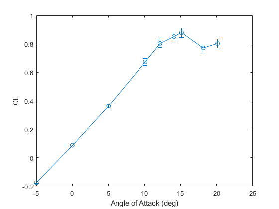
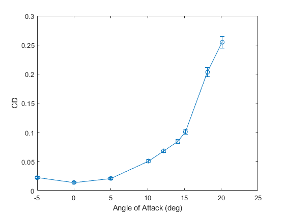

Contents
CL, CD vs alpha
Trevor Burgoyne 16 Oct 2022
% Paths for data loading ROOT_DIR = "C:/Users/Trevor/Desktop/AEM 4602W/Fluids Lab/Fluids Lab Data/"; FORCE_DIR = ROOT_DIR + "Force Measurements/"; ANGLES = ["-5", "00", "05", "10", "12", "14", "15", "18", "20"]; % Useful Conversions LB_TO_N = 4.448; % lb -> N = (lb) * 4.448 N/lb N_TO_LB = 1/LB_TO_N; DEG_TO_RAD = pi/180; % degrees -> rad = (deg)* pi/180 rad/deg % Base Uncertainties F_ERR = 0.1; % ± N, given error in sting measurements A_ERR = 0.2; % ± degrees, given error in sting measurements C_ERR = 0.001; % ± m, bias error from using a meter stick B_ERR = 0.001; % ± m, bias error from using a meter stick V_ERR = 0.4; % ± m/s, given error in pitot tube measurements Y_ERR = 1/16; % ± in, bias error from reading hot wire tape measure RHO_ERR = 0.02; % *100 ± % of value, given error in pitot tube measurements MU_ERR = 0.01; % *100 ± % of value, given error in pitot tube measurements F_ERR_LB = F_ERR * N_TO_LB; % lb A_ERR_RAD = A_ERR * DEG_TO_RAD; % rad % Arrays to store CD, CL, and a CL_arr = zeros(1, length(ANGLES)); CD_arr = zeros(1, length(ANGLES)); a_arr = zeros(1, length(ANGLES)); CL_ERR_arr = zeros(1, length(ANGLES)); CD_ERR_arr = zeros(1, length(ANGLES)); % Airfoil properties c = .254; % m +/- .005m, chord length b = .670; % m +/- .005m, wing span S = b*c; % m^2, approx. wing area S_ERR = sqrt( (c*B_ERR)^2 + (b*C_ERR)^2 ); % ± m^2 for i = 1:length(ANGLES) path = FORCE_DIR + "force_mes_a_" + ANGLES(i) + ".mat"; data = load(path); % lab data, with P, rho, v, Fn, Fa, a % q = .5*rho*v^2, dynamic pressure q = .5 * data.rho * data.v^2; Q_ERR = sqrt( (.5 * RHO_ERR * data.v^2)^2 + (data.rho*data.v*V_ERR)^2 ); % L = -Fa*sin(a) + Fn*cos(a), Lift Force L = -data.Fa*sind(data.a) + data.Fn*cosd(data.a); L = L * LB_TO_N; L_ERR = sqrt( (-F_ERR_LB*sind(data.a))^2 + (F_ERR_LB*cosd(data.a))^2 +... ( (-data.Fa*cosd(data.a) - data.Fn*sind(data.a))*A_ERR_RAD )^2 )... * LB_TO_N; % ± N % D = Fa*cos(a) + Fn*sin(a), Drag Force D = data.Fa*cosd(data.a) + data.Fn*sind(data.a); D = D * LB_TO_N; D_ERR = sqrt( (-F_ERR_LB*cosd(data.a))^2 + (F_ERR_LB*sind(data.a))^2 +... ( (data.Fa*cosd(data.a) + data.Fn*sind(data.a))*A_ERR_RAD )^2 )... * LB_TO_N; % ± N % CL = L / q*S, coefficient of lift CL = L / (q*S); CL_ERR = sqrt( (L_ERR/(q*S))^2 + ( (-Q_ERR*L)/(S*q^2) )^2 + ( (-S_ERR*L)/(q*S^2) )^2 ); % unitless % CD = D / (q*S), coefficient of drag CD = D / (q*S); CD_ERR = sqrt( (D_ERR/(q*S))^2 + ( (-Q_ERR*D)/(S*q^2) )^2 + ( (-S_ERR*D)/(q*S^2) )^2 ); % unitless % Store in arrays for graphing CL_arr(i) = CL; CD_arr(i) = CD; a_arr(i) = data.a; CL_ERR_arr(i) = CL_ERR; CD_ERR_arr(i) = CD_ERR; end
CL vs Angle of Attack
errorbar(a_arr, CL_arr, CL_ERR_arr, "-o") xlabel("Angle of Attack (deg)") ylabel("CL")
CD vs Angle of Attack
errorbar(a_arr, CD_arr, CD_ERR_arr, "-o") xlabel("Angle of Attack (deg)") ylabel("CD")